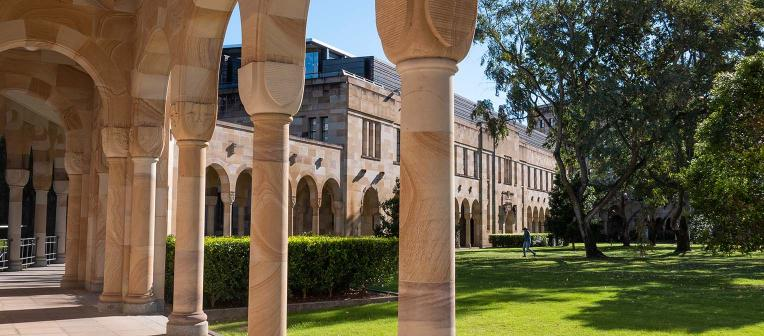

Announcement
17 July 2026 · Brisbane, Queensland
QUASAR to host the ASA's 2027 Annual Scientific Meeting in Brisbane
We are proud to announce that the Queensland Universities Astronomy & Space Research (QUASAR) Collaboration will host the Astronomical Society of Australia's (ASA) 2027 Annual Scientific Meeting (ASM) in Brisbane. The meeting will be held jointly by the University of Queensland, Queensland University of Technology, and the University of Southern Queensland, and reflects the collective ambition of a rapidly growing community that has expanded significantly since Brisbane last hosted the ASM in 2019.

Dates and venue
The meeting will be held from Monday 5 to Friday 9 July 2027 at UQ's St Lucia campus, one of Australia's most beautiful university settings, situated on the banks of the Brisbane River and well connected to the city by ferry, metro, and bus. The Harley Wood Winter School will precede the ASM over the weekend of 2 to 4 July, with the location still to be confirmed.
A meeting for the next decade
Australian astronomy is entering a new phase, and we hope this ASM will be an opportunity to focus on the next decade of astronomy and research across the country. The programme aims to cover a wide variety of topics and expertise from across Australia, with a particular focus on scientific computing, and on community, culture, and diversity within our field.
A collaborative host
The ASM will be hosted collaboratively across Queensland's astronomy community. The primary programme will be held at the University of Queensland's St Lucia campus, with the University of Southern Queensland and the Queensland University of Technology hosting additional events and special sessions throughout the week.

Looking ahead
Planning is well underway, though several elements of the programme, including the Winter School venue and some social events, are still being finalised. We will share further details, including registration information, as they are confirmed. Keep an eye on QUASAR and the ASA for updates in the lead up to 2027.